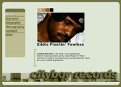
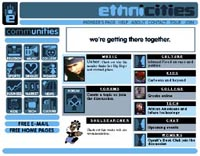
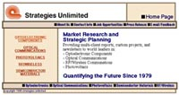
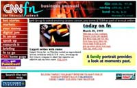
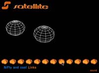
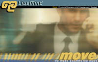
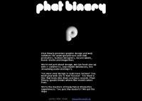

|

|
CityBoy Records (beta)
This is the Beta-release of the CityBoy Records web site
home of Detroit Techno legend, Eddie Flashin' Fowlkes.
|
|

|
EthniCities
I lead the design and production for this African
American Online Community Startup. Not only did I design the identity
and the website, I also developed the back-end tools to build
home pages for members via a web-based interface.
|
|

|
Strategies Unlimited
I redesigned the website for this silicon valley
consulting firm, making it 500% faster to download (a major issue
for their foreign customer base). I also developed back-end tools
that made the site self-maintaining, allowing them to add reports
and send press releases.
|
|
|
CNNfn Marimba Channel
I was the design lead for the CNNfn Marimba channel.
|
|

|
CNNfn Website
As an Interactive Media Designer at CNNfn I was one of the small
team that redesigned the CNNfn website when the New York crew took over. I was also
chosen to work directly with the VP for Interactive Media on establishing the
information architecture of the site. Unfortunately I did not make a clean
backup of the site as I left it. The link takes you to the new site. Here is a
large JPG of one of the interior pages I designed (the banner here was designed
by Mark Creel, the Art Director).
|
|

|
Satelite Records Demo
I did a demo site for the east coast record chain,
Satellite records. Besides sprucing up the look of the site,
it uses a unique shockwave director interface bar.
|
|

|
LiveMind redesign
I did a mockup for the SanFrancisco start-up
LiveMind. The company is integrating e-commerce functionality
into hand-helds and cellular technologies. The design balances
a high-tech energy with a mature color pallette that establishes stability.
|
|

|
Phat Binary
The site for my own underground dance music
culture design avatar.
|

{kind=link}